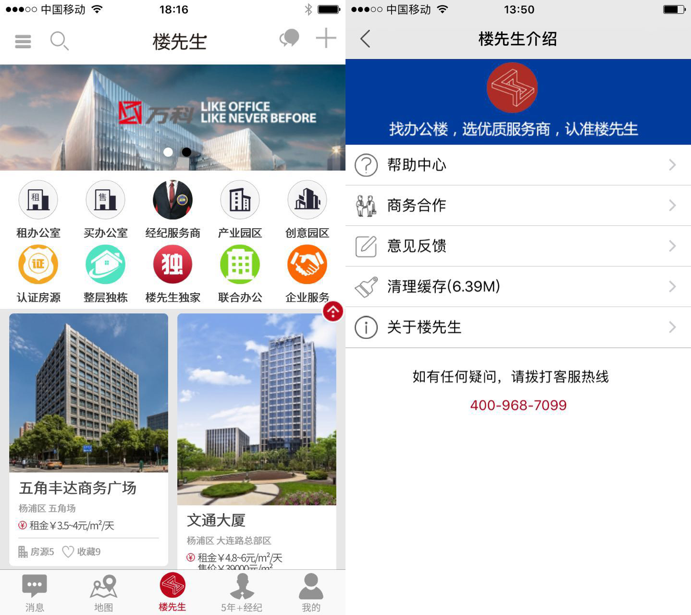
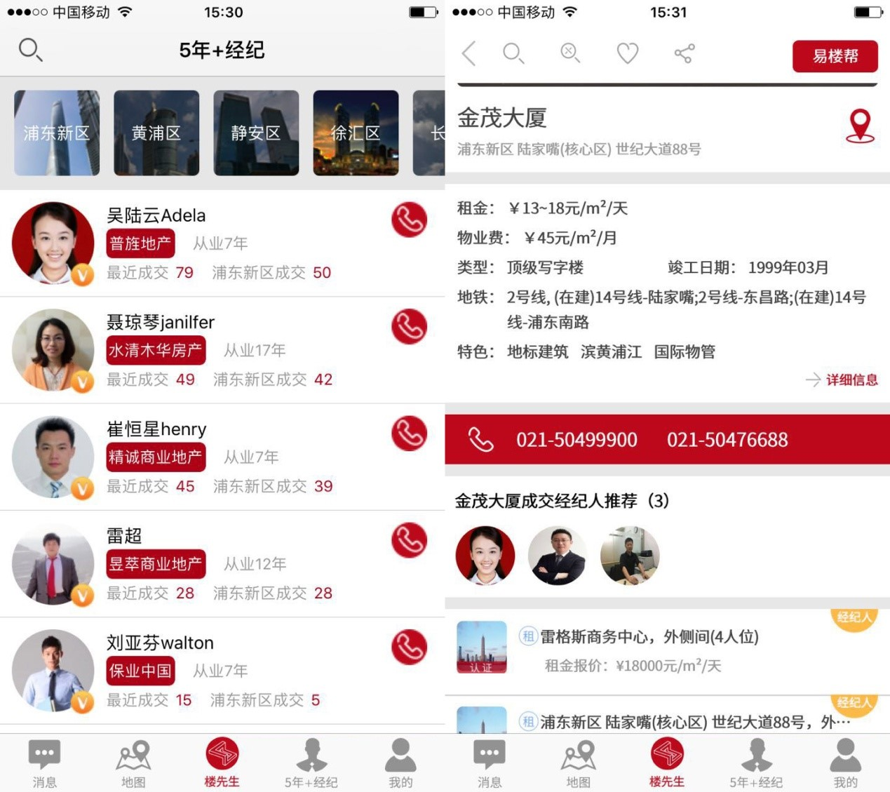
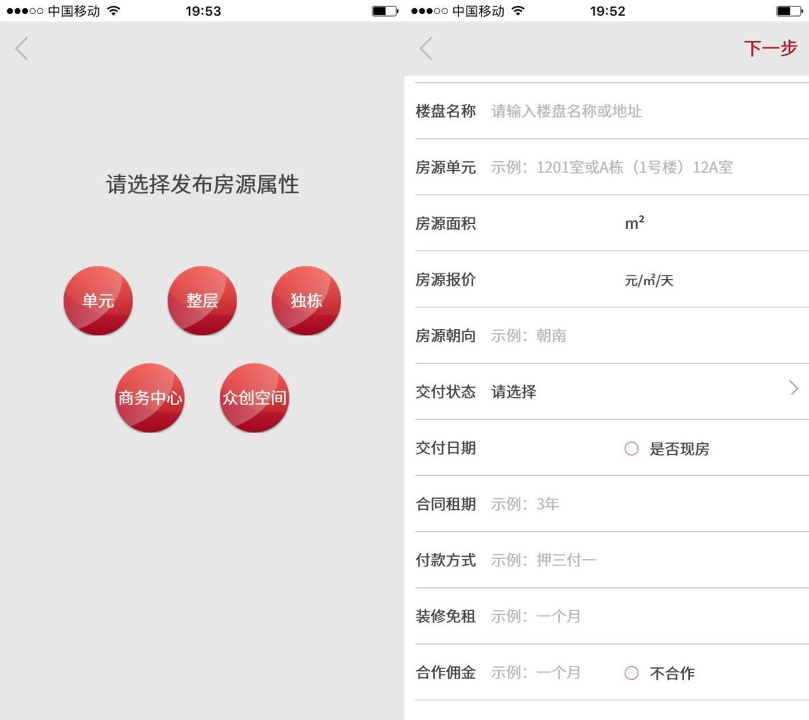
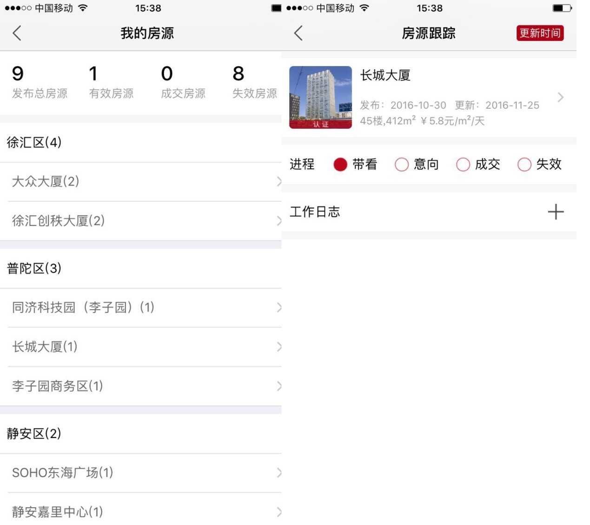
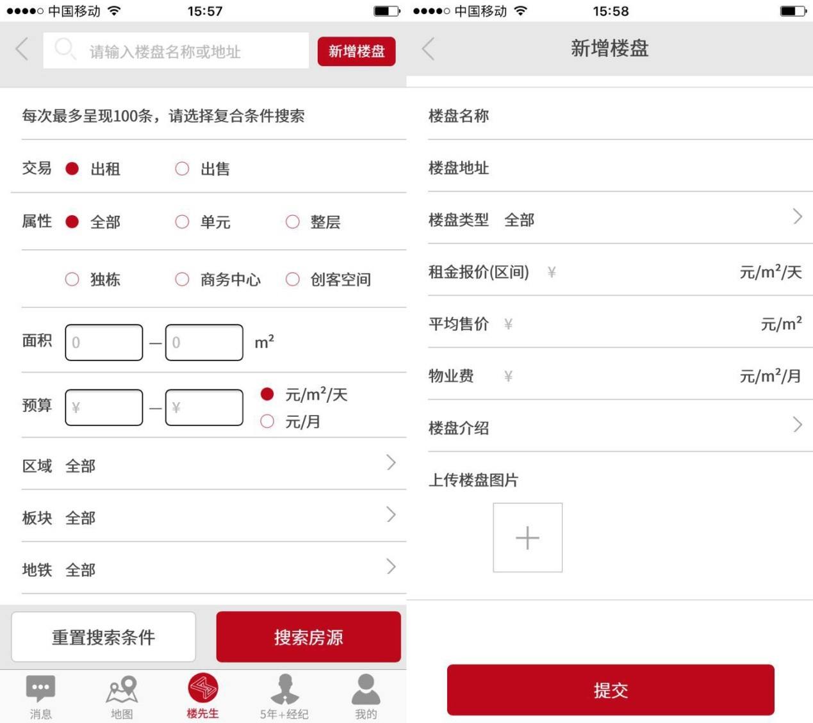
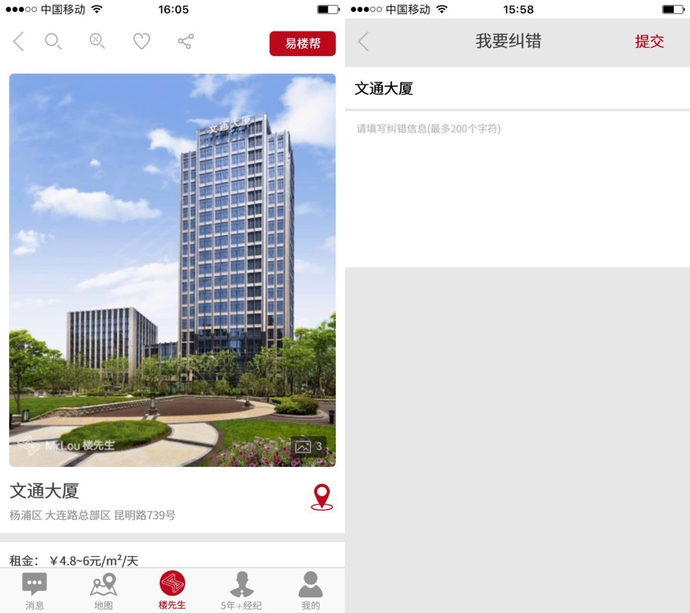
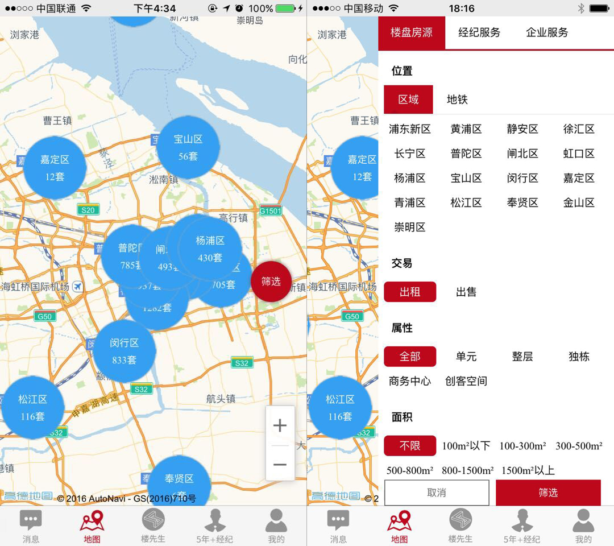
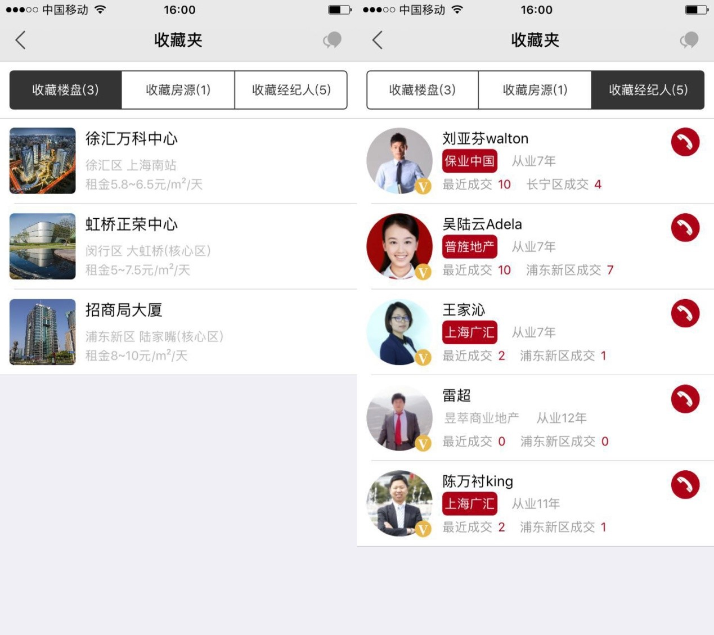
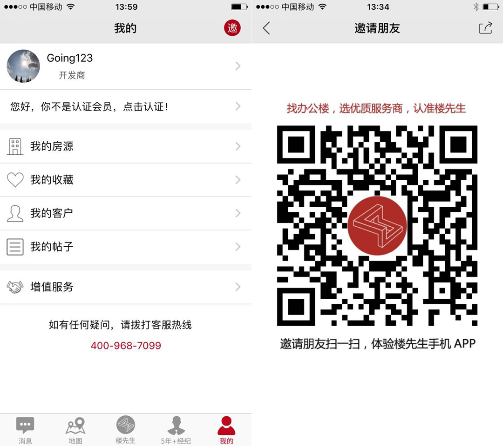

一、找办公楼，选优质服务商，认准楼先生
楼先生不同于其他平台，我们不是一个完全以突出信息为主的平台，更多是突出服务客户的资深经纪人，所以希望用户通过5年+经纪板块、经纪服务、成交经纪人推荐等来选择平台内资深经纪人服务，当然也可以通过筛选认证房源来选择服务主体。
二、发布房源
用户可以注册后免费在楼先生发布房源，认证后的用户发布房源都会有认证标签，房源才会出现在认证房源列表里；另外无论是任何身份，对于非会员和普通会员，发布有效房源（带看和意向状态房源）总数为3条；白银会员发布有效房源（带看和意向状态房源）总数为20条；白金会员发布有效房源（带看和意向状态房源）总数为50条；如有成交或失效房源，请及时失效处理，以免占用有效房源数量，房源每10天会发送通知提醒更新，如果连续三次提醒未更新，房源会自动失效，在3个月内可不限更新房源时间；任何房源自发布日起超过3个月将自动下架，无法继续刷新，用户可自行删除处理。
三、房源跟踪、提醒及房源刷新
用户可进入我的房源页面对房源状态及跟踪情况进行更新，无论是大业主还是小业主的房源信息，可以记录任意提醒，让系统自动记忆并定时通知，以便提高工作效率和合理安排时间。另外点击更新时间按钮及任意修改房源状态都会起到刷新房源时间的目的，让自己发布的房源可以优先显示。
四、搜索功能及新增楼盘
楼先生的搜索功能是复合模糊搜索（既有准确部分，也有关联部分），首先输入框是精确搜索关键字信息及楼盘，而复合房源搜索是搜索匹配和关联的房源信息，并以楼盘的形式予以展现，首先显示最为匹配的楼盘房源信息，其次才把备选可参考推荐的楼盘房源也罗列出来，这种方式可能更偏向业务工具思维，因为早期楼先生定位于一款服务于经纪人和业主的业务工具。后续搜索体验会有更多的改进空间。
网站地图中我们新增了地图找经纪服务和企业服务商的功能，未来用户通过楼先生可以快速找到各个区域的经纪服务和企业服务商。
如果你在发布房源或者搜索发现我们系统里面没有匹配的楼盘时，请通过新增楼盘添加楼盘信息，因为楼先生平台里面的任何一个显示出来的房源必须匹配在某个楼盘下显示，否则就会成为异常房源，而无法显示出来。
五、纠错举报
楼先生无论网站还是APP上都有纠错举报功能，如果你发现楼盘信息有误，可以及时通过纠错提交正确信息，我们将第一时间内改正，如果你发现房源虚假，也可以及时提交平台，我们也将及时对数据进行核实并发布人予以警告及其他处置，如果你对于经纪人有任何意见或成交信息虚假，也请及时举报，我们都将会尽力去核实，以便公平公正对待每一个会员用户。
六、地图功能
地图功能分地图搜索功能和详情页内的地图功能，地图搜索是一个复合搜索功能，不仅可以搜索楼盘和房源，还可以搜索经纪服务和企业服务，对于楼盘详情页的地图功能，可以查看周边的配套信息，以及查看本楼附近的楼盘，尤其对于用户了解市场是一个非常方便的工具。
七、收藏功能
收藏功能主要是方便客户收藏楼盘、收藏房源和收藏经纪人，以便快速查看信息
八、邀请朋友及会员认证服务
如果你身份有朋友没有注册或了解过楼先生，而他可能有这样的需求，请你通过邀请朋友点击邀请他下载使用楼先生，你的小小举动，或许会让你的朋友也可以体验下楼先生便捷的产品及服务。
楼先生对于不同身份类型的用户都有不同的会员服务项目，不同身份的人进入易楼精英汇查看到的会员服务也是不一样的，如需获取会员权限或会员服务，请自愿加入并选择会员类型，普通会员都是免费认证的！（详情请查看易楼精英汇服务介绍）